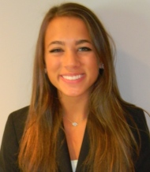

Executive Board
Sarah Reitman
President



Cayuga’s Watchers is a student-led 501(c)3 independent organization designed to mitigate the harms associated with high-risk drinking while promoting student safety at Cornell University.
We aim to become an established national model for combating high-risk drinking by promoting peer social responsibility at Cornell University.
Cayuga’s Watchers recruits, hires, and trains students to anonymously attend campus social events anonymously at the express request of the hosting student organization. While on duty, Cayuga’s Watchers’ employees, or Watchers, engage event-goers using non-confrontational bystander intervention techniques in an effort to mitigate the harms associated with high-risk drinking, which include alcohol poisoning, sexual assault, and property damage.
Confidential: Cayuga’s Watchers commits to protect all information entrusted to us, including the identities of the organizations and individuals with whom we work.
Student-led: We value our integration within the campus and maintain student leadership.
Non-Confrontational: Our methods are exclusively non-confrontational. Antagonism is never condoned as a method of engagement.
Peer-to-peer: We seek to foster a community bound by good citizenship and social responsibility, in which friends look after friends.
Short Term: Cayuga’s Watchers aims to combat the immediate dangers associated with high-risk drinking.
Long Term: Cayuga’s Watchers aims to replace campus social norms by emphasizing safe and responsible alcohol consumption.
Ultimate Objective: Ultimately, Cayuga’s Watchers, in conjunction with student and University support, endeavors to become an established national model for combating high risk drinking by emphasizing social responsibility and campus policies that target harm reduction.
Cornell University student organization planning to host a social event contacts Cayuga's Watchers to aid in promoting a fun and safe environment. A Cayuga’s Watchers representative will then work with the organization to coordinate logistics and assemble a student-led team to meet the needs of the event.
A Cayuga's Watchers event team arrives prior to the start of the event to acquaint themselves with hosting organization, review mutual expectations, and plan for the evening ahead. During event, a Cayuga's Watchers event team socializes with fellow partygoers while remaining anonymous, sober, and aware of their surroundings. If necessary, team member(s) engages fellow partygoers in a non-confrontational, peer-to-peer fashion in order to diffuse potentially harmful situations.
A Cayuga's Watchers event team will note event details in a post-event evaluation form ---information that is strictly confidential and will aid in enhancing future services.
The greatest challenge facing Cayuga's Watchers is funding.
Although the organization adapted its service model from other collegiate
bystander intervention programs, unlike its peer programs, through its 501(c)(3)
status it operates entirely independent of Cornell University. As a not-for-profit
that offers its service to the Cornell community free-of-charge, Cayuga's Watchers
relies on the generosity of other 501(c)(3) organizations, charitable organizations,
and individual contributors to provide the capital necessary to conduct its operations.
For more information please refer to our Annual Report.